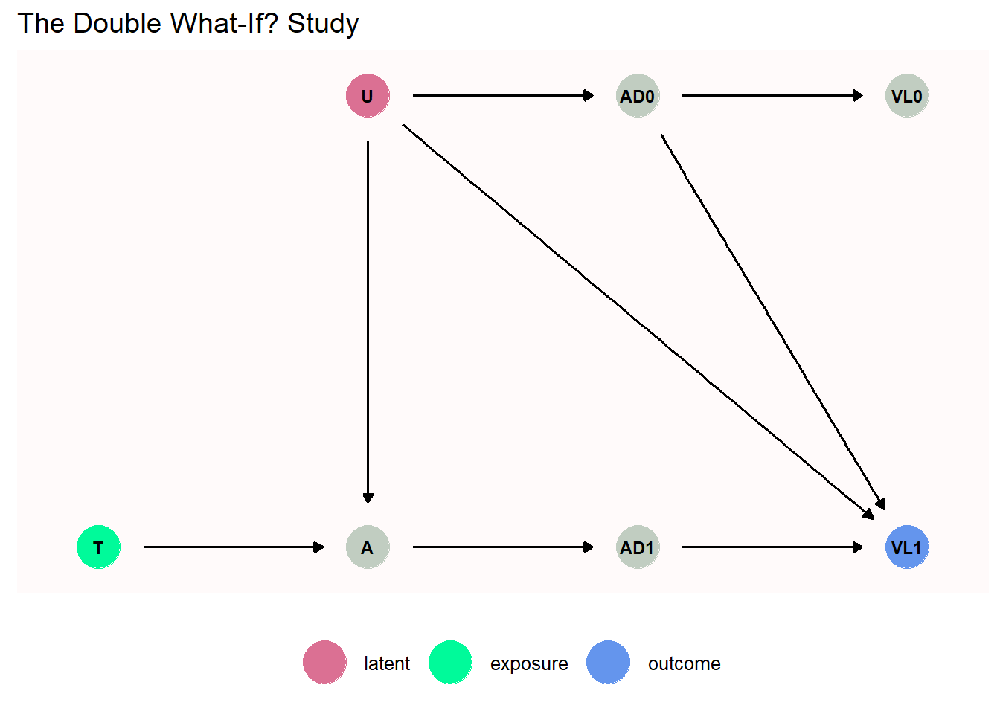

Chapter 1 Introduction
library(ggplot2, quietly = TRUE)
library(ggdag, quietly = TRUE)1.1 A Brief History
1.2 Data Examples
1.2.1 Mortality Rates by Country
We use this function to generate the mortability rates by age and country
#' Create dataset Mortability Rate by Country
#'
#' Create dataset Mortability Rate by Country.
#'
#' Create dataset Mortability Rate by Country as shown in section 1.2.1.
#'
#' @return Dataframe of mortability rates
#' @export
#'
#' @examples
#' data_mortability()
data_mortability <- function() {
out <- data.frame(
"T" = c(TRUE, TRUE, FALSE, FALSE),
"H" = c(FALSE, TRUE, FALSE, TRUE),
"deaths" = c(756340, 2152660, 2923480, 7517520),
"population" = c(282305227, 48262955, 1297258493, 133015479))
out$Y <- out$deaths / out$population
# verify with book
check <- c(0.002679, 0.0446, 0.002254, 0.05652)
stopifnot(sum(abs(out$Y - check)) < 0.0001)
out
}
#' Create Mortability by Country dataset for exposure modeling
#'
#' Create Mortability by Country dataset for exposure modeling.
#'
#' Create Mortability by Country dataset for exposure modeling as described
#' in section 6.2 of chapter 6.
#'
#' @return Dataframe of mortability rates and exposure model
#' @export
#'
#' @examples
#' data_mortability_exp()
data_mortability_exp <- function() {
out <- data.frame(
"H" = c(0, 0, 0, 0, 1, 1, 1, 1),
"T" = c(0, 0, 1, 1, 0, 0, 1, 1),
"Y" = c(0, 1, 0, 1, 0, 1, 0, 1),
"n" = c(1297258493 - 2923480,
2923480,
282305227 - 756340,
756340,
133015479 - 7517520,
7517520,
48262955 - 2152660,
2152660))
# compute proportion who died
out$p <- out$n / sum(out$n)
stopifnot(sum(out$p) == 1)
out
}## T H deaths population Y
## 1 TRUE FALSE 756340 282305227 0.002679157
## 2 TRUE TRUE 2152660 48262955 0.044602739
## 3 FALSE FALSE 2923480 1297258493 0.002253583
## 4 FALSE TRUE 7517520 133015479 0.0565161291.2.2 National Center for Education Statistics
1.2.3 Reducing Alcohol Consumption
1.2.3.1 The What-If? Study
1.2.3.1.1 The Double What-If? Study
The code can be found in the file doublewhatifsim.R and is verified
against the author’s file just below.
The DAG for the Double What-If? study in the dagitty version is
scm <- list()
scm <- within(scm, {
the_nodes <- c("U" = "Unmeasured, healthy behavior (U=1)",
"AD0" = "Adherence time 0",
"VL0" = "Viral Load time 0",
"T" = "Naltrexone (T=1)",
"A" = "Reduced drinking (A=1)",
"AD1" = "Adherence time 1",
"VL1" = "Viral Load time 1")
coords <- data.frame(
name = names(the_nodes),
x = c(2, 3, 4, 1, 2, 3, 4),
y = c(2, 2, 2, 1, 1, 1, 1)
)
dag <- dagify(
AD0 ~ U,
VL0 ~ AD0,
A ~ `T` + U,
AD1 ~ A,
VL1 ~ AD0 + AD1 + U,
outcome = "VL1",
exposure = "T",
latent = "U",
coords = coords,
labels = the_nodes)
# status' colors
colrs <- c("latent" = "palevioletred", "exposure" = "mediumspringgreen",
"outcome" = "cornflowerblue")
# plot the DAG
plot <- dag %>%
tidy_dagitty() %>%
ggdag_status(color = status, text = TRUE, node_size = 10, text_size = 3,
text_col = "black") +
scale_color_manual(values = colrs, na.value = "honeydew3") +
scale_fill_manual(values = colrs, na.value = "honeydew3") +
ggdag::theme_dag_blank(panel.background =
element_rect(fill="snow", color="snow")) +
theme(legend.position = "bottom",
legend.title = element_blank()) +
labs(title = "The Double What-If? Study")
})
scm$plot
and the code for doublewhatifsim.R is
#' \code{doublewhatifsim} script rewritten
#'
#' \code{doublewhatifsim} script rewritten.
#'
#' Simulate the What-If study data.
#'
#' @param n Nb of observations.
#' @param seed Integer, the seed used for random numbers.
#'
#' @return Dataframe
doublewhatifsim <- function(n = 1000, seed = 444) {
set.seed(seed)
# variables each with probability 0.5
U <- rbinom(n, size = 1, prob = 0.5)
# probability of AD0 depends on U
AD0prob <- 0.2 + 0.6 * U
# generate independent bernoulli variables with varying probabilities
AD0 <- rbinom(n, size = 1, prob = AD0prob)
VL0prob <- 0.8 - 0.4 * AD0
VL0 <- rbinom(n, size = 1, prob = VL0prob)
`T` <- rbinom(n, size = 1, prob = 0.5)
Aprob <- 0.05 + `T` * U * 0.8
A <- rbinom(n, size = 1, prob = Aprob)
AD1prob <- 0.1 + 0.8 * A
AD1 <- rbinom(n, size = 1, prob = AD1prob)
VL1prob <- VL0prob + 0.1 - 0.45 * AD1
VL1 <- rbinom(n, size =1 , prob = VL1prob)
data.frame(
"AD0" = AD0,
"VL0" = VL0,
"T" = `T`,
"A" = A,
"AD1" = AD1,
"VL1" = VL1
)
}which we verify against the raw data set provided by the author.
bb <- doublewhatifdat
d <- doublewhatifsim()
stopifnot(identical(d, bb))1.2.5 A Cancer Clinical Trial
1.3 Exercises
The exercises are located in a separate project.